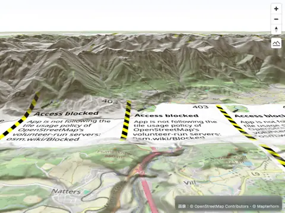
Ortho Earth · Get started · npm
MapLibre GL JS examples, on ortho
The 139 official MapLibre GL JS examples, run unchanged against the ortho globe engine through its MapLibre-compatible API. Each card shows ortho's rendering and, after the category, how closely it matches MapLibre (answers and sampled pixels). Click a card for the example's source in its ortho form — run it here, copy it, or download it.
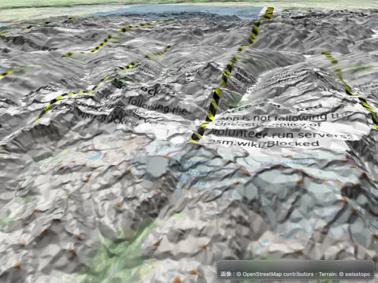
Add 3D terrain from quantized-mesh tiles
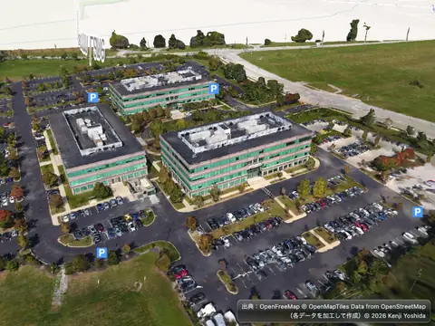
Add 3D tiles using three.js
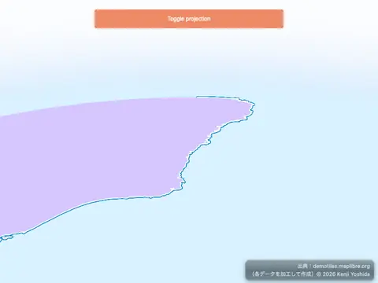
Add a 3D model to globe using three.js
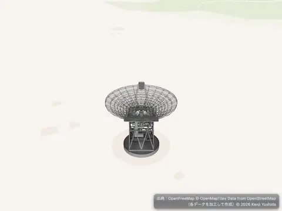
Add a 3D model using three.js
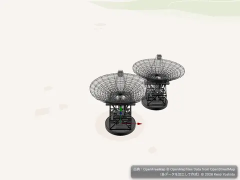
Add a 3D model with babylon.js
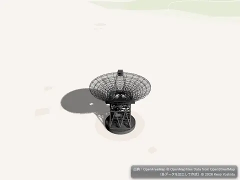
Add a 3D model with shadow using three.js
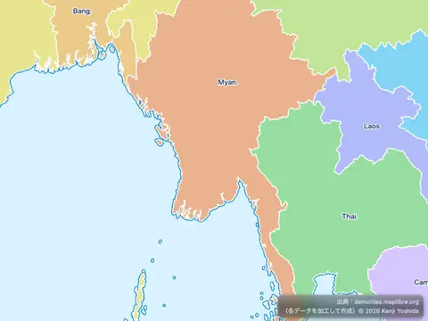
Add a canvas source
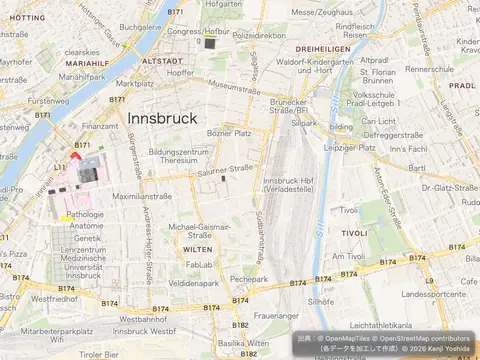
Add a COG raster source
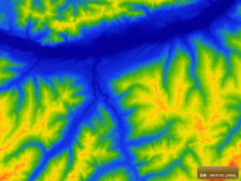
Add a color relief layer
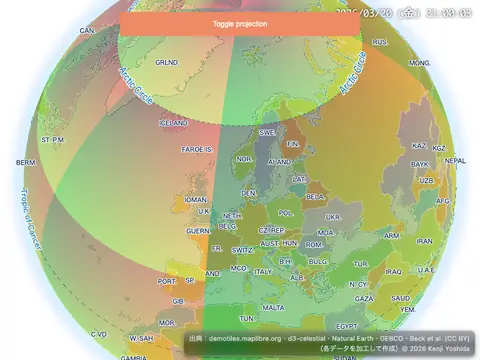
Add a custom layer with tiles to a globe
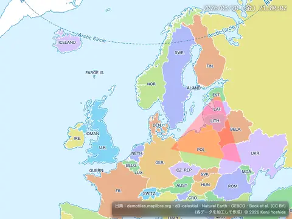
Add a custom style layer
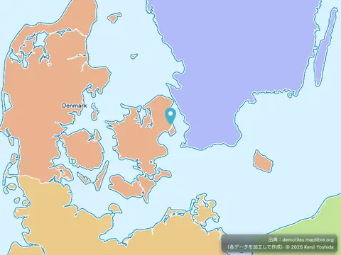
Add a default marker
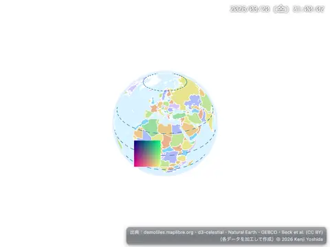
Add a generated icon to the map
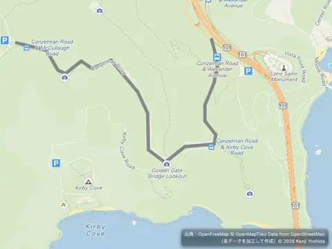
Add a GeoJSON line
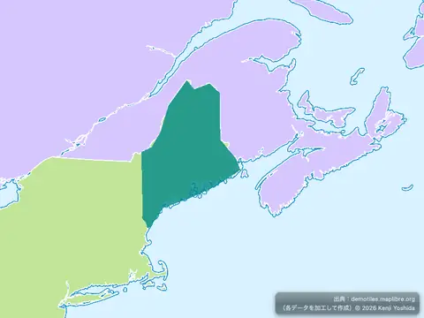
Add a GeoJSON polygon
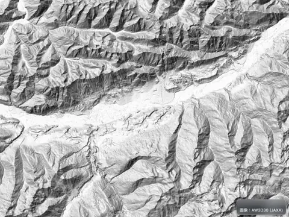
Add a hillshade layer
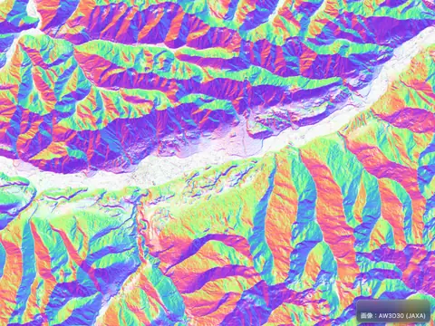
Add a multidirectional hillshade layer
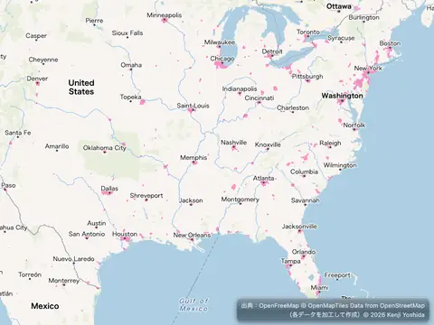
Add a new layer below labels
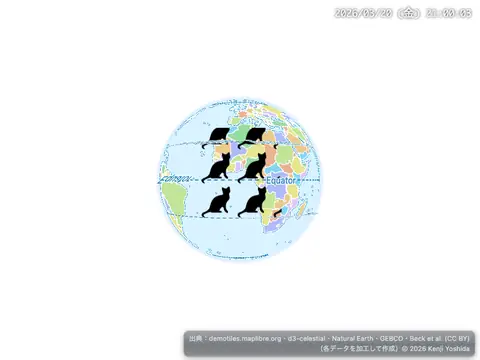
Add a pattern to a polygon
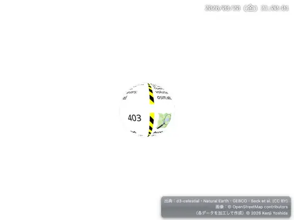
Add a raster tile source
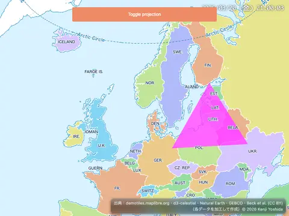
Add a simple custom layer on a globe
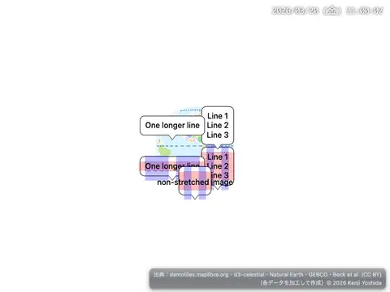
Add a stretchable image to the map
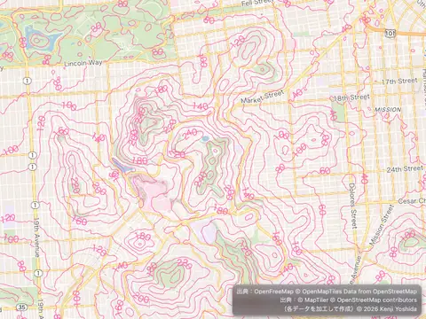
Add a vector tile source
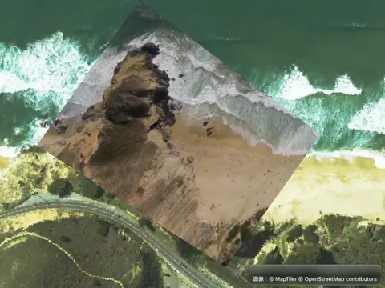
Add a video
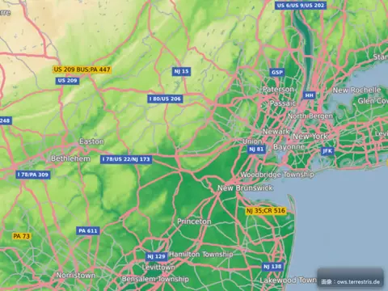
Add a WMS source
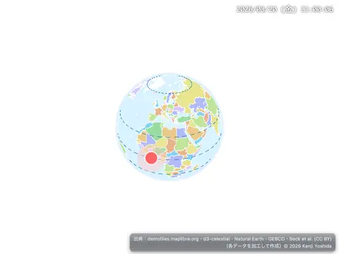
Add an animated icon to the map
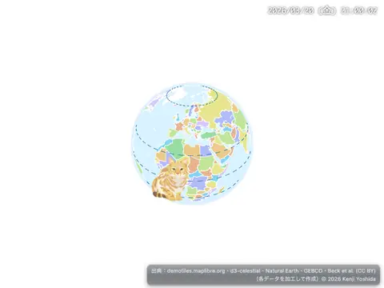
Add an icon to the map
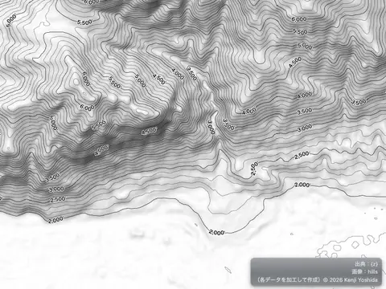
Add Contour Lines
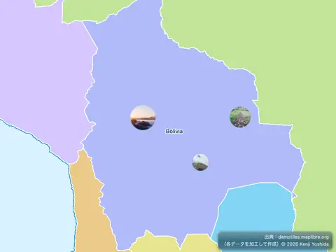
Add custom icons with Markers
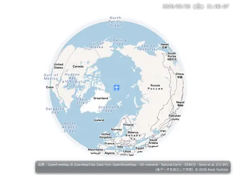
Add live realtime data
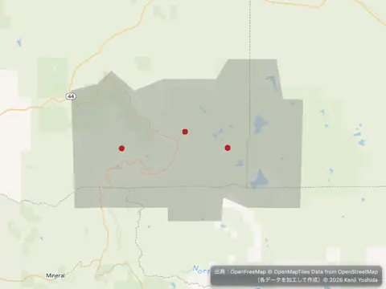
Add multiple geometries from one GeoJSON source
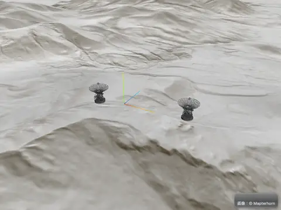
Adding 3D models using three.js on terrain
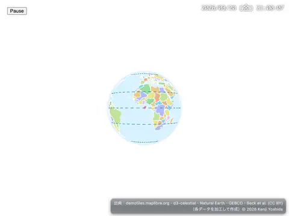
Animate a line
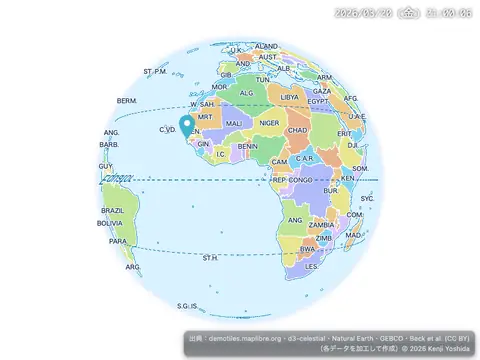
Animate a marker
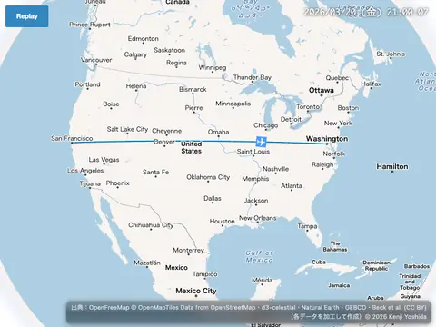
Animate a point along a route
Animate a point
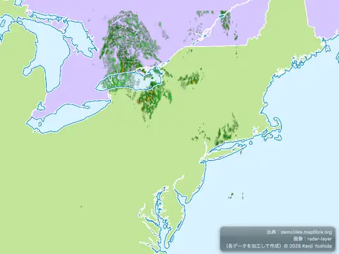
Animate a series of images
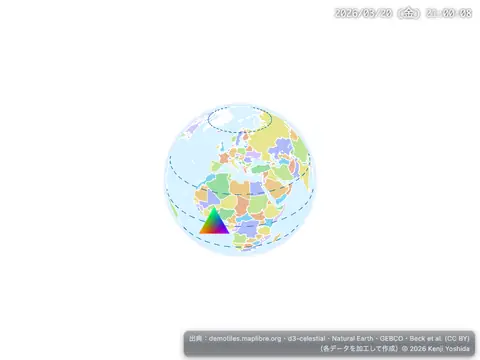
Animate an icon on the GPU
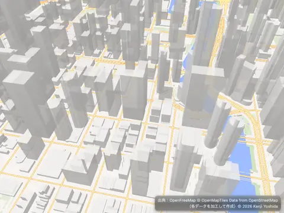
Animate map camera around a point
Animate symbol to follow the mouse
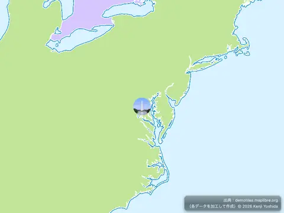
Attach a popup to a marker instance
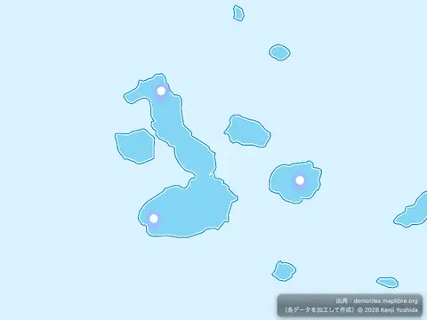
Center the map on a clicked symbol
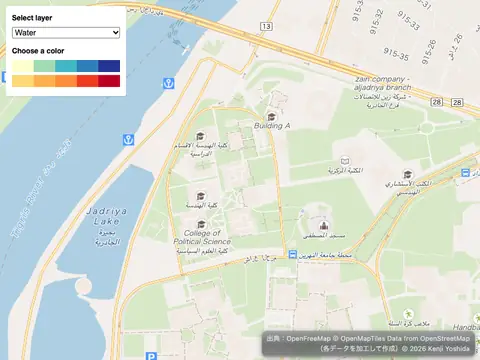
Change a layer's color with buttons
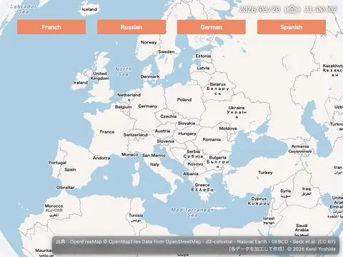
Change a map's language
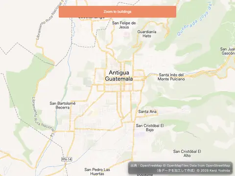
Change building color based on zoom level
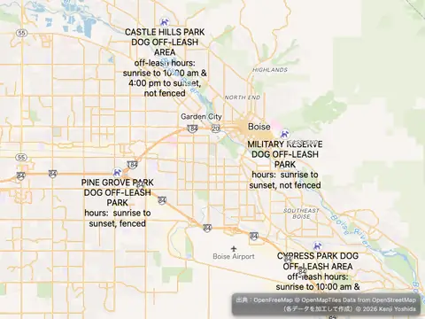
Change the case of labels
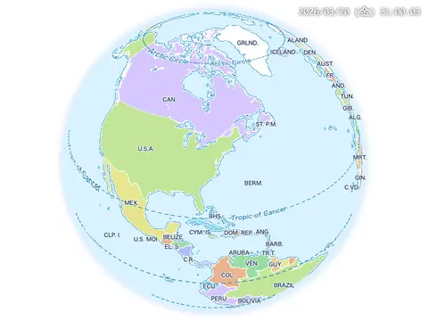
Change the default position for attribution
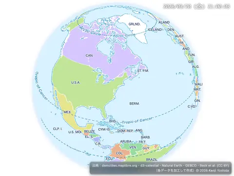
Check if WebGL is supported
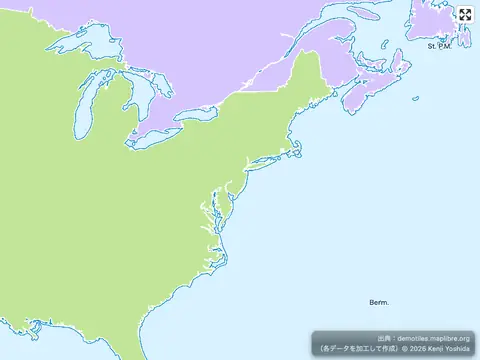
Cooperative gestures
Create a draggable Marker
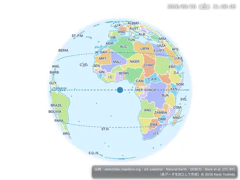
Create a draggable point
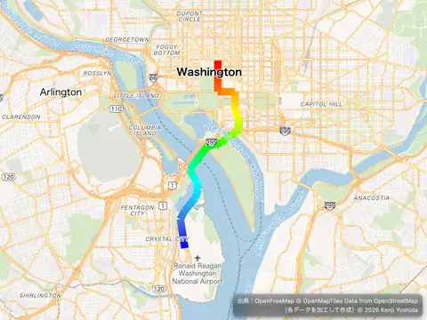
Create a gradient dashed line using an expression
Create a gradient line using an expression
Create a Heatmap layer on a globe with terrain elevation
Create a heatmap layer
Create a hover effect
Create a time slider
Create and style clusters
Create deck.gl layer using REST API
Customize camera animations
Customize the map transform constrain
Disable map rotation

Disable scroll zoom
Display a globe with a fill extrusion layer
Display a globe with a vector map
Display a globe with an atmosphere
Display a hybrid satellite map with terrain elevation
Display a map with MLT

Display a map
Display a non-interactive map
Display a popup on click
Display a popup on hover
Display a popup
Display a remote SVG symbol
Display a satellite map
Display and style rich text labels
Display buildings in 3D
Display HTML clusters with custom properties
Display line that crosses 180th meridian
Display map navigation controls
Display Performance Metrics
Draw a Circle
Draw GeoJSON points
Draw geometries with terra-draw
Draw polygon with mapbox-gl-draw
Elevate symbols above the terrain
Enter a 360° photosphere
Extrude polygons for 3D indoor mapping
Fill extrusion rounded corners
Filter layer symbols using global state
Filter symbols by text input
Filter symbols by toggling a list
Filter within a Layer
Fit a map to a bounding box
Fit to the bounds of a LineString
Fly to a location based on scroll position
Fly to a location
Generate and add a missing icon to the map
Geocode with Nominatim
Get coordinates of the mouse pointer
Get features under the mouse pointer
Hash routing
Jump to a series of locations
Level of Detail Control
Locale switching
Locate the user
Measure distances
Navigate the map with game-like controls
Offset the vanishing point using padding
PMTiles source and protocol
Render world copies
Restrict map panning to an area
Select features with boxZoomEnd callback
Set center point above ground
Set pitch and bearing
Show polygon information on click
Sky, Fog, Terrain